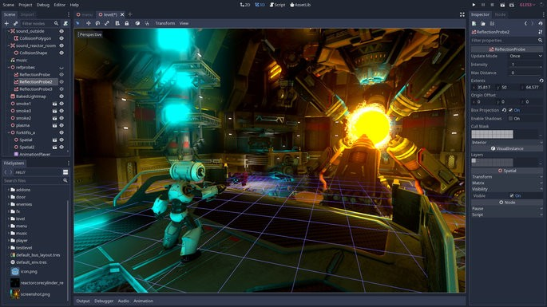
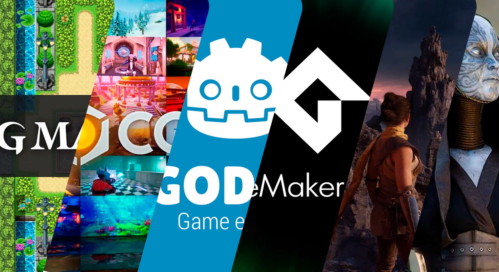
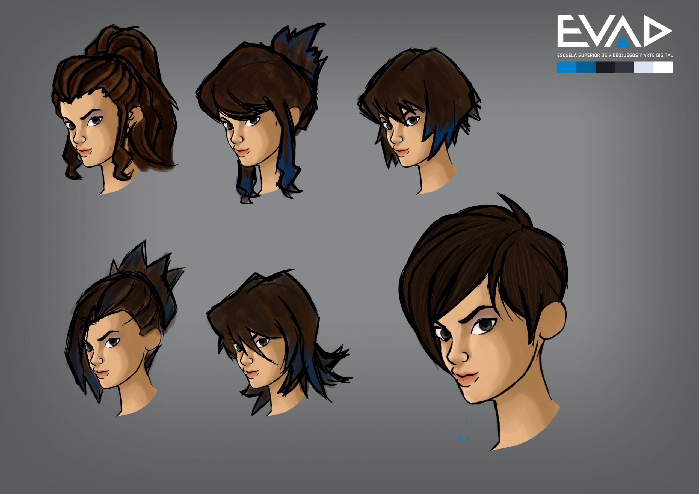

Entradas Recientes
¿Cómo Empezar a Desarrollar Videojuegos?

1) Elige un motor de juego sencillo
Un motor de juego es una plataforma que te permite crear videojuegos sin tener que construir todo desde cero. Para los principiantes, es recomendable empezar con un motor de juego que sea fácil de aprender y usar. Los más populares para novatos son:
*Unity: Es uno de los motores de juego más usados. Usas C# para programar. Es ideal para juegos 2D y 3D y tiene una gran cantidad de tutoriales gratuitos para aprender.
*Godot: Es un motor de código abierto que usa GDScript, que es similar a Python y más fácil de aprender para los principiantes. Ideal para juegos 2D.
*GameMaker Studio: Perfecto para juegos 2D. No necesitas ser un experto en programación, ya que puedes usar su lenguaje propio para desarrollar juegos.
2)Aprende lo básico de programación
Aunque algunos motores de juego permiten crear juegos sin mucha programación, aprender a programar te será muy útil y te permitirá personalizar mucho más tus proyectos. Aquí están los conceptos básicos que deberías entender:
*Variables: Son como "cajas" donde puedes almacenar datos, como números o texto. Por ejemplo, la puntuación de un jugador.
*Condiciones:Permiten que el juego tome decisiones, como si un personaje salta cuando presionas una tecla.
*Funciones: Son bloques de código que realizan tareas específicas, como mover a un personaje o detectar colisiones.
*Ciclos: Son instrucciones que repiten acciones, como hacer que un enemigo se mueva constantemente en una dirección.
Si eres totalmente nuevo en la programación, puedes comenzar con lenguajes sencillos como Python o JavaScript, que son fáciles de aprender y te servirán para comprender los principios de programación que luego podrás aplicar en motores de juego como Unity o Godot.
3)Crea un proyecto sencillo
Al principio, lo mejor es no tratar de hacer un juego complejo. Comienza con algo simple, como:
*Un juego de Pong (el clásico juego de las palas).
*Un juego de plataformas 2D (como Super Mario).
*Un juego de disparos básico(donde controlas una nave o un personaje que dispara).
Enfócate en hacer que el juego funcione, incluso si los gráficos son simples y rudimentarios. El objetivo es entender cómo interactúan las mecánicas del juego y cómo se programa.
4)Sigue tutoriales para principiantes
Hay una gran cantidad de recursos en línea que te guiarán paso a paso en la creación de tu primer videojuego. Algunos sitios donde puedes aprender:
*Unity Learn: Es la plataforma oficial de Unity que tiene tutoriales interactivos y gratuitos. Ideal para los que empiezan desde cero.
*Godot Docs: La documentación de Godot incluye tutoriales fáciles de seguir, especialmente para juegos 2D.
*YouTube: Busca tutoriales como "Cómo crear un juego en Unity para principiantes" o "Tutorial básico Godot". Hay muchos creadores que hacen guías completas.
Estos tutoriales son muy útiles porque te enseñan tanto los aspectos técnicos como los creativos del desarrollo de videojuegos.
5)Practica constantemente
El desarrollo de videojuegos es como aprender a tocar un instrumento o hacer ejercicio. Cuanto más practiques, mejor serás. A medida que avances, no te preocupes por hacer juegos perfectos. Haz muchos proyectos pequeños y mejora gradualmente tus habilidades.
*Empieza con juegos simples.
*Luego, intenta agregar más funcionalidades a tus juegos (por ejemplo, enemigos, puntajes, o power-ups).
*No te olvides de probar tu juego mientras lo haces. Ver qué funciona y qué no te ayudará a mejorar.
6)Usa recursos gratuitos
Si no eres un experto en diseño gráfico o en la creación de música, puedes usar recursos gratuitos disponibles en línea. Algunos sitios donde puedes encontrar estos recursos son:
*OpenGameArt.org: Ofrece gráficos 2D y 3D gratuitos que puedes usar en tus juegos.
*Itch.io: Además de ser una plataforma para vender juegos, también tiene recursos como música, efectos de sonido y gráficos que puedes descargar de forma gratuita.
*FreeSound.org: Ofrece efectos de sonido gratuitos que puedes usar en tus juegos.
Usar estos recursos es una forma de ahorrar tiempo, sobre todo cuando estás empezando.
7)NO TE RINDAS!!!
El desarrollo de videojuegos puede ser desafiante al principio, pero es importante no rendirse. No te preocupes si al principio las cosas no salen como esperabas. La clave es seguir practicando y aprendiendo de los errores. Cada vez que encuentres un problema y lo resuelvas, estarás más cerca de ser un mejor desarrollador.
Leer más
Principales Motores de Juego para Desarrolladores Indie

Los desarrolladores indie tienen varias opciones cuando se trata de motores de juego, cada uno con sus propias ventajas dependiendo de las necesidades del proyecto, presupuesto y experiencia del desarrollador. Aquí te dejo algunos de los motores de juego más populares y recomendados para desarrolladores indie:
Unity
*Plataformas: PC, Mac, Consolas, Móviles, Web, VR/AR.
*Lenguaje: C#.
*Características:
Amplia comunidad: Muchos tutoriales, foros y recursos.
Gratis: La versión básica es gratuita hasta cierto umbral de ingresos.
Versatilidad: Puedes crear 2D y 3D con la misma herramienta.
Asset Store: Gran mercado de assets y plugins para acelerar el desarrollo.
Multiplataforma: Exporta a una gran cantidad de plataformas, lo que lo hace ideal para juegos móviles y VR.
Ideal para: Juegos 2D y 3D, juegos móviles, VR, juegos multiplataforma.
Unreal Engine
*Plataformas: PC, Mac, Consolas, Móviles, VR.
*Lenguaje: C++ (aunque también tiene Blueprints, un sistema visual de programación).
*Características:
Gráficos AAA: Unreal tiene un motor gráfico muy potente, ideal para juegos con gráficos avanzados.
Gratis: Gratis hasta alcanzar un umbral de ingresos (más o menos $1 millón).
Blueprints: Permite desarrollar sin necesidad de saber código, lo que es útil para desarrolladores con menos experiencia técnica.
Gran rendimiento en 3D: Ideal para juegos de alto rendimiento con gráficos realistas.
Ideal para: Juegos 3D con gráficos avanzados, juegos de acción, shooters, RPGs.
Godot
*Plataformas: PC, Mac, Linux, Consolas, Móviles, Web.
*Lenguaje: GDScript (similar a Python), C#, C++.
*Características:
Completamente gratuito: No hay royalties ni pagos adicionales.
Ligero y fácil de usar: Ideal para proyectos pequeños y medianos.
Motor 2D y 3D: Tiene una excelente implementación para juegos 2D, y también soporta 3D.
Código abierto: Puedes modificar el motor para adaptarlo a tus necesidades.
Ideal para: Juegos 2D, prototipos rápidos, y proyectos de código abierto.
Construct
*Plataformas: PC, Mac, Móviles, Web.
*Lenguaje: No necesita programación (sistema visual basado en eventos)
*Características
Fácil de aprender: Ideal para desarrolladores sin experiencia en programación.
Desarrollo rápido: Permite crear prototipos rápidamente sin necesidad de escribir código.
Exportación a HTML5: Perfecto para juegos web y móviles.
Interfaz visual: Su sistema basado en eventos lo hace muy intuitivo.
Ideal para:Juegos 2D sencillos, juegos web, prototipos rápidos.
GameMaker Studio 2
*Plataformas: PC, Consolas, Móviles, Web.
*Lenguaje: GameMaker Language (GML) y Drag-and-Drop.
*Características:
Rápido para prototipos 2D: Ideal para juegos 2D, plataformas, y juegos sencillos.
Interfaz amigable: Muy fácil de aprender, incluso para principiantes.
Multiplataforma: Exporta a múltiples plataformas, incluidas consolas.
Gratis (con limitaciones): Tiene una versión gratuita con algunas restricciones.
Ideal para: Juegos 2D, especialmente en géneros como plataformas y puzzle.
Leer más
El Proceso Creativo Detrás de un Videojuego

El proceso creativo detrás del desarrollo de un videojuego es una mezcla de arte, diseño, programación y narrativa, y puede variar según el tipo de juego, los recursos disponibles y el equipo de desarrollo. Sin embargo, hay una serie de etapas comunes que todos los videojuegos atraviesan en su creación. A continuación, te explico el proceso paso a paso de forma más narrativa.
Generación de Ideas
Todo comienza con una idea, aunque generalmente se trata de una lluvia de ideas o "brainstorming". En esta fase inicial, los miembros del equipo (si es un equipo grande, o el propio desarrollador si es un proyecto indie) se enfocan en definir qué tipo de juego desean crear. Este proceso puede implicar preguntas como: ¿Qué historia quiero contar? ¿Qué tipo de mecánicas quiero que tenga el juego? ¿Será un juego 2D o 3D? ¿Cuál será el tono y estilo visual?
En esta etapa también se definen los conceptos centrales que darán forma al juego, como el género (acción, aventura, puzzle, etc.), la temática (fantasía, ciencia ficción, misterio), y la experiencia general que se busca transmitir al jugador. La narrativa juega un papel importante aquí si el juego tiene una historia, ya que la trama debe alinearse con la jugabilidad y el tono del juego.
Diseño del Juego
Una vez que la idea general está definida, comienza el proceso de diseño del juego, donde las mecánicas y los sistemas del juego se detallan. Esto incluye decisiones sobre cómo funcionarán los controles, la progresión de los personajes, los enemigos, los niveles y los desafíos.
El diseño de niveles es una parte crucial de esta etapa. Se planifican los mapas y escenarios donde el jugador interactuará con las mecánicas del juego, asegurándose de que la dificultad aumente gradualmente y que el flujo del juego sea fluido. También es el momento de diseñar los sistemas de recompensa, como logros o desbloqueables, que motivarán al jugador a seguir avanzando.
Además, si el juego tiene una historia, se esbozan los diálogos, los personajes y los eventos narrativos. A veces, en juegos con grandes tramas, también se escriben guiones completos.
Desarrollo y Producción
La fase de desarrollo y producción es donde realmente comienza a tomar forma el videojuego. Aquí, el equipo de programación se encarga de construir el motor del juego, programar las mecánicas, la inteligencia artificial de los enemigos, la interacción entre el jugador y los objetos, y cualquier otra funcionalidad técnica que sea esencial para que el juego funcione correctamente. Los programadores también se encargan de la optimización del juego para que funcione sin problemas en las plataformas en las que se lanzará.
En paralelo, los artistas visuales trabajan en la creación de los gráficos. Si es un juego en 3D, esto incluye la modelación de personajes, escenarios y objetos, mientras que en juegos 2D se crean los sprites y fondos. También se definen los estilos visuales del juego, como la paleta de colores, el diseño de personajes y el aspecto general del mundo en el que se desarrollará la historia.
La música y los efectos de sonido son igualmente importantes, ya que ayudan a definir la atmósfera y la emoción del juego. Un buen diseño de sonido puede mejorar la inmersión, mientras que una banda sonora bien compuesta puede darle vida al juego y hacer que el jugador se sienta más conectado con la experiencia.
Pruebas y Calidad (QA)
El proceso de pruebas es esencial para asegurarse de que el juego funcione bien y sea jugable. En esta fase, los testers buscan errores (bugs) que puedan afectar la jugabilidad, la estabilidad del juego y la experiencia del jugador. Las pruebas de calidad incluyen la identificación de fallos en el código, problemas con la inteligencia artificial de los enemigos, errores visuales, y cualquier tipo de comportamiento inesperado.
Además de las pruebas técnicas, también se realizan pruebas de jugabilidad para asegurarse de que el juego sea divertido, desafiante en los momentos adecuados y fácil de aprender. Los testers dan retroalimentación sobre la experiencia del jugador, lo que puede llevar a realizar ajustes en la dificultad, los controles o incluso en la historia o los personajes.
Refinamiento e Iteración
El proceso de iteración es continuo durante el desarrollo del juego. A medida que se realizan pruebas y se recibe retroalimentación, se realizan ajustes en la jugabilidad, los gráficos y la historia. Es posible que se cambien niveles, que se ajusten mecánicas que no estén funcionando correctamente o que se añadan nuevos elementos para mejorar la experiencia general del jugador. La fase de iteración es clave para refinar el juego y asegurarse de que se cumple con la visión original.
A menudo, el feedback de los jugadores o testers genera cambios importantes en el diseño del juego. Por ejemplo, si los jugadores encuentran una mecánica demasiado difícil o poco clara, se hacen ajustes para mejorar la experiencia.
Lanzamiento y Post-lanzamiento
Una vez que el juego está terminado y se ha probado exhaustivamente, llega el momento del lanzamiento. El equipo de marketing comienza a hacer ruido sobre el juego, lanzando trailers, publicando avances en redes sociales y organizando eventos para atraer la atención del público.
En la fase de lanzamiento, el juego se distribuye en las plataformas elegidas, como Steam, consolas, o móviles. Aquí es cuando el juego llega finalmente al público, pero el trabajo no termina con el lanzamiento. Los desarrolladores siguen monitoreando la recepción del juego, recopilando feedback de los jugadores y, en muchos casos, lanzando actualizaciones y parches para solucionar problemas técnicos que puedan haber pasado desapercibidos durante las pruebas.
También puede haber contenido post-lanzamiento, como expansiones, nuevos niveles, o misiones adicionales, para mantener el interés de los jugadores y atraer a nuevos usuarios.
Leer más